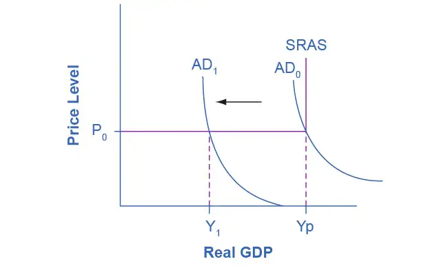
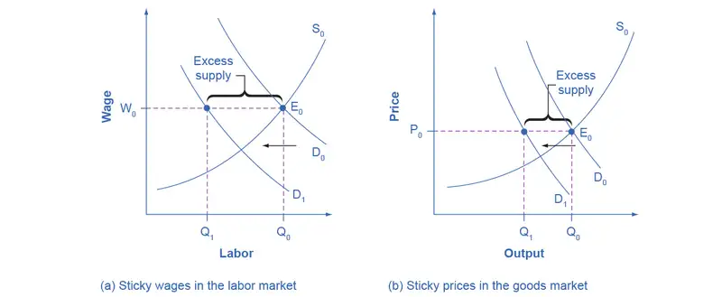
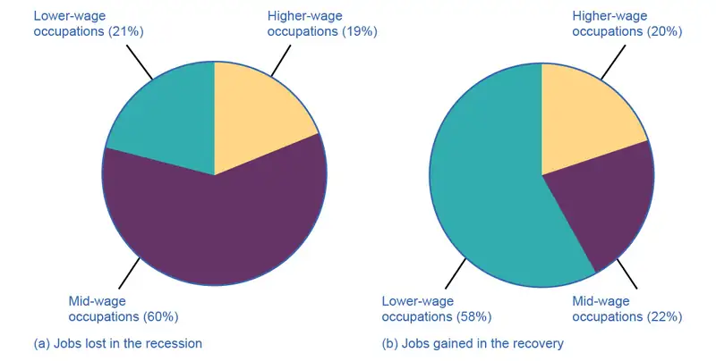
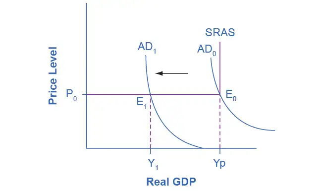
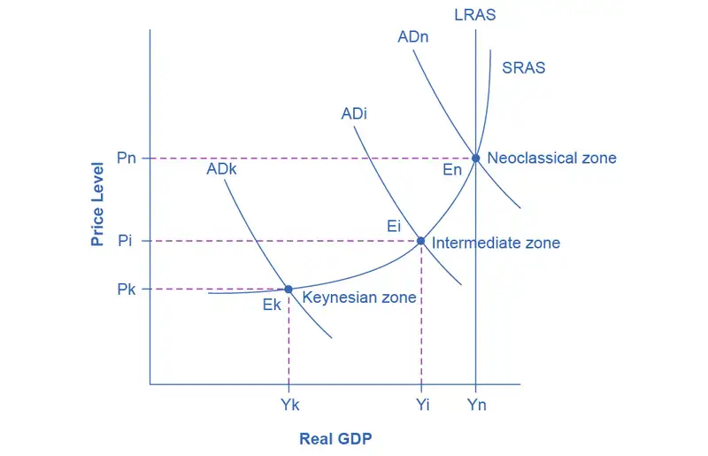
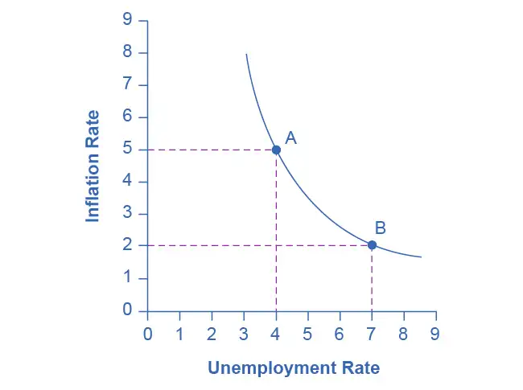
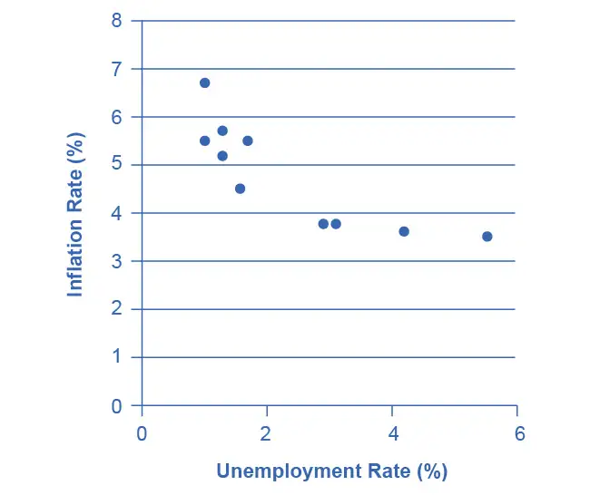
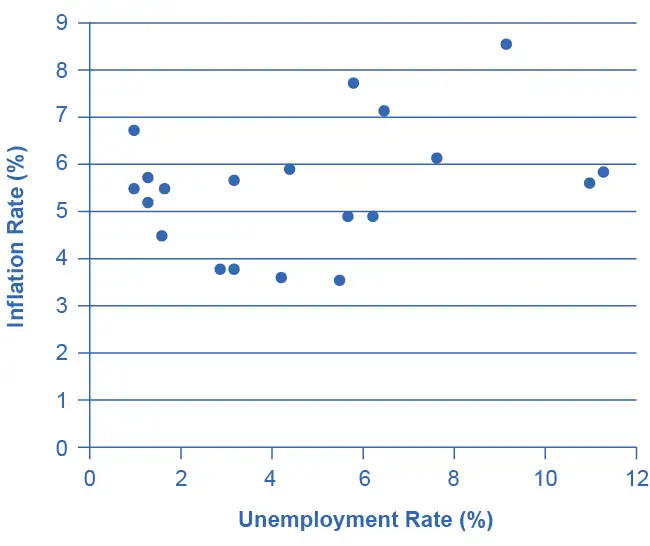
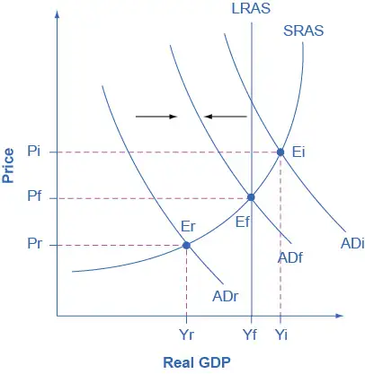

Chapter 25: The Keynesian Perspective¶
Introduction¶
Bring It Home: The Great Recession
The 2008–2009 Great Recession hit the U.S. economy hard. According to the Bureau of Labor Statistics (BLS), the number of unemployed Americans rose from 6.8 million in May 2007 to 15.4 million in October 2009. During that time, the U.S. Census Bureau estimated that approximately 170,000 small businesses closed. Mass layoffs peaked in February 2009 when employers gave 326,392 workers notice. U.S. productivity and output fell as well. Job losses, declining home values, declining incomes, and uncertainty about the future caused consumption expenditures to decrease. According to the BLS, household spending dropped by 7.8%.
Home foreclosures and the meltdown in U.S. financial markets called for immediate action by Congress, the President, and the Federal Reserve Bank. For example, the government implemented programs such as the American Restoration and Recovery Act to help millions of people by providing tax credits for homebuyers, paying “cash for clunkers,” and extending unemployment benefits. From cutting back on spending, filing for unemployment, and losing homes, millions of people were affected by the recession. While the United States is now on the path to recovery, people will feel the impact for many years to come.
What caused this recession and what prevented the economy from spiraling further into another depression? Policymakers looked to the lessons learned from the 1930s Great Depression and to John Maynard Keynes' models to analyze the causes and find solutions to the country’s economic woes. The Keynesian perspective is the subject of this chapter.
Chapter Outline: Introduction to the Keynesian Perspective
In this chapter, you will learn about:
- Aggregate Demand in Keynesian Analysis
- The Building Blocks of Keynesian Analysis
- The Phillips Curve
- The Keynesian Perspective on Market Forces
We have learned that the level of economic activity, for example output, employment, and spending, tends to grow over time. In Economic Growth we learned the reasons for this trend. The Macroeconomic Perspective pointed out that the economy tends to cycle around the long-run trend. In other words, the economy does not always grow at its average growth rate. Sometimes economic activity grows at the trend rate, sometimes it grows more than the trend, sometimes it grows less than the trend, and sometimes it actually declines. You can see this cyclical behavior in Figure 25.2.
![This graph illustrates the percent change in GDP over time. The percent change in GDP is measured on the y-axis, from –24 to 28, in increments of 4 percent. Years are measured on the x-axis, from 1935 to 2020. Other than the 1930s and the 1940s, the change in GDP is generally positive, and fluctuates between 2 and 8 percent. In 1935 the percent change in GDP was 9 percent, then it declines to –4 percent in 1939, then it spikes to 20 percent in 1944, then it declines to –12 percent in 1946. It increases then to 8 percent in 1950.](img/cnx-econ3ev1-2-c25-02.webp)
This empirical reality raises two important questions: How can we explain the cycles, and to what extent can we moderate them? This chapter (on the Keynesian perspective) and The Neoclassical Perspective explore those questions from two different points of view, building on what we learned in The Aggregate Demand/Aggregate Supply Model.
Percent Change of U.S. Real Gross Domestic Product.
25.1 Aggregate Demand in Keynesian Analysis¶
Learning Objectives
By the end of this section, you will be able to:
- Explain real GDP, recessionary gaps, and inflationary gaps
- Recognize the Keynesian AD/AS model
- Identify the determining factors of both consumption expenditure and investment expenditure
- Analyze the factors that determine government spending and net exports
The Keynesian perspective focuses on aggregate demand. The idea is simple: firms produce output only if they expect it to sell. Thus, while the availability of the factors of production determines a nation’s potential GDP, the amount of goods and services that actually sell, known as real GDP, depends on how much demand exists across the economy. Figure 25.3 illustrates this point.

Keynes argued that, for reasons we explain shortly, aggregate demand is not stable—that it can change unexpectedly. Suppose the economy starts where AD intersects SRAS at P0 and Yp. Because Yp is potential output, the economy is at full employment. Because AD is volatile, it can easily fall. Thus, even if we start at Yp, if AD falls, then we find ourselves in what Keynes termed a recessionary gap. The economy is in equilibrium but with less than full employment, as Y1 in Figure 25.3 shows. Keynes believed that the economy would tend to stay in a recessionary gap, with its attendant unemployment, for a significant period of time.
In the same way (although we do not show it in the figure), if AD increases, the economy could experience an inflationary gap, where demand is attempting to push the economy past potential output. Consequently, the economy experiences inflation. The key policy implication for either situation is that government needs to step in and close the gap, increasing spending during recessions and decreasing spending during booms to return aggregate demand to match potential output.
Recall from The Aggregate Supply-Aggregate Demand Model that aggregate demand is total spending, economy-wide, on domestic goods and services. (Aggregate demand (AD) is actually what economists call total planned expenditure. Read the appendix on The Expenditure-Output Model for more on this.) You may also remember that aggregate demand is the sum of four components: consumption expenditure, investment expenditure, government spending, and spending on net exports (exports minus imports). In the following sections, we will examine each component through the Keynesian perspective.
What Determines Consumption Expenditure?¶
Consumption expenditure is spending by households and individuals on durable goods, nondurable goods, and services. Durable goods are items that last and provide value over time, such as automobiles. Nondurable goods are things like groceries—once you consume them, they are gone. Recall from The Macroeconomic Perspective that services are intangible things consumers buy, like healthcare or entertainment.
Keynes identified three factors that affect consumption:
- Disposable income: For most people, the single most powerful determinant of how much they consume is how much income they have in their take-home pay, also known as disposable income, which is income after taxes.
- Expected future income: Consumer expectations about future income also are important in determining consumption. If consumers feel optimistic about the future, they are more likely to spend and increase overall aggregate demand. News of recession and troubles in the economy will make them pull back on consumption.
- Wealth or credit: When households experience a rise in wealth, they may be willing to consume a higher share of their income and to save less. When the U.S. stock market rose dramatically in the late 1990s, for example, U.S. savings rates declined, probably in part because people felt that their wealth had increased and there was less need to save. How do people spend beyond their income, when they perceive their wealth increasing? The answer is borrowing. On the other side, when the U.S. stock market declined about 40% from March 2008 to March 2009, people felt far greater uncertainty about their economic future, so savings rates increased while consumption declined.
Finally, Keynes noted that a variety of other factors combine to determine how much people save and spend. If household preferences about saving shift in a way that encourages consumption rather than saving, then AD will shift out to the right.
Link It Up
Visit this website for more information about how the recession affected various groups of people.
What Determines Investment Expenditure?¶
We call spending on new capital goods investment expenditure. Investment falls into four categories: producer’s durable equipment and software, nonresidential structures (such as factories, offices, and retail locations), changes in inventories, and residential structures (such as single-family homes, townhouses, and apartment buildings). Businesses conduct the first three types of investment, while households conduct the last.
Keynes’s treatment of investment focuses on the key role of expectations about the future in influencing business decisions. When a business decides to make an investment in physical assets, like plants or equipment, or in intangible assets, like skills or a research and development project, that firm considers both the expected investment benefits (future profit expectations) and the investment costs (interest rates).
- Expectations of future profits: The clearest driver of investment benefits is expectations for future profits. When we expect an economy to grow, businesses perceive a growing market for their products. Their higher degree of business confidence will encourage new investment. For example, in the second half of the 1990s, U.S. investment levels surged from 18% of GDP in 1994 to 21% in 2000. However, when a recession started in 2001, U.S. investment levels quickly sank back to 18% of GDP by 2002.
- Interest rates also play a significant role in determining how much investment a firm will make. Just as individuals need to borrow money to purchase homes, so businesses need financing when they purchase big ticket items. The cost of investment thus includes the interest rate. Even if the firm has the funds, the interest rate measures the opportunity cost of purchasing business capital. Lower interest rates stimulate investment spending and higher interest rates reduce it.
Many factors can affect the expected profitability on investment. For example, if the energy prices decline, then investments that use energy as an input will yield higher profits. If government offers special incentives for investment (for example, through the tax code), then investment will look more attractive; conversely, if government removes special investment incentives from the tax code, or increases other business taxes, then investment will look less attractive. As Keynes noted, business investment is the most variable of all the components of aggregate demand.
What Determines Government Spending?¶
The third component of aggregate demand is federal, state, and local government spending. Although we usually view the United States as a market economy, government still plays a significant role in the economy. As we discuss in Environmental Protection and Negative Externalities and Positive Externalities and Public Goods, government provides important public services such as national defense, transportation infrastructure, and education.
Keynes recognized that the government budget offered a powerful tool for influencing aggregate demand. Not only could more government spending stimulate AD (or less government spending reduce it), but lowering or raising tax rates could influence consumption and investment spending. Keynes concluded that during extreme times like deep recessions, only the government had the power and resources to move aggregate demand. For example, during the 2020 pandemic-induced recession, the federal government gave money to state and local governments and to households to support the economy when many firms and governments needed to shut down or suffered a large decline in revenue and needed to lay off workers.
What Determines Net Exports?¶
Recall that exports are domestically produced products that sell abroad while imports are foreign produced products that consumers purchase domestically. Since we define aggregate demand as spending on domestic goods and services, export expenditures add to AD, while import expenditures subtract from AD.
Two sets of factors can cause shifts in export and import demand: changes in relative growth rates between countries and changes in relative prices between countries. What is happening in the countries' economies that would be purchasing those exports heavily affects the level of demand for a nation's exports. For example, if major importers of American-made products like Canada, Japan, and Germany have recessions, exports of U.S. products to those countries are likely to decline. Conversely, the amount of income in the domestic economy directly affects the quantity of a nation's imports: more income will bring a higher level of imports.
Relative prices of goods in domestic and international markets can also affect exports and imports. If U.S. goods are relatively cheaper compared with goods made in other places, perhaps because a group of U.S. producers has mastered certain productivity breakthroughs, then U.S. exports are likely to rise. If U.S. goods become relatively more expensive, perhaps because a change in the exchange rate between the U.S. dollar and other currencies has pushed up the price of inputs to production in the United States, then exports from U.S. producers are likely to decline.
Table 25.1 summarizes the reasons we have explained for changes in aggregate demand.
Table 25.1 Determinants of Aggregate Demand
| Reasons for a Decrease in Aggregate Demand | Reasons for an Increase in Aggregate Demand |
|---|---|
| Consumption • Rise in taxes • Fall in income • Rise in interest rates • Desire to save more • Decrease in wealth • Fall in future expected income |
Consumption • Decrease in taxes • Increase in income • Fall in interest rates • Desire to save less • Rise in wealth • Rise in future expected income |
| Investment • Fall in expected rate of return • Rise in interest rates • Drop in business confidence |
Investment • Rise in expected rate of return • Drop in interest rates • Rise in business confidence |
| Government • Reduction in government spending • Increase in taxes |
Government • Increase in government spending • Decrease in taxes |
| Net Exports • Decrease in foreign demand • Relative price increase of U.S. goods |
Net Exports • Increase in foreign demand • Relative price drop of U.S. goods |
25.2 The Building Blocks of Keynesian Analysis¶
Learning Objectives
By the end of this section, you will be able to:
- Evaluate the Keynesian view of recessions through an understanding of sticky wages and prices and the importance of aggregate demand
- Explain the coordination argument, menu costs, and macroeconomic externality
- Analyze the impact of the expenditure multiplier
Now that we have a clear understanding of what constitutes aggregate demand, we return to the Keynesian argument using the model of aggregate demand/aggregate supply (AD/AS). (For a similar treatment using Keynes’ income-expenditure model, see the appendix on The Expenditure-Output Model.)
Keynesian economics focuses on explaining why recessions and depressions occur and offering a policy prescription for minimizing their effects. The Keynesian view of recession is based on two key building blocks. First, aggregate demand is not always automatically high enough to provide firms with an incentive to hire enough workers to reach full employment. Second, the macroeconomy may adjust only slowly to shifts in aggregate demand because of sticky wages and prices, which are wages and prices that do not respond to decreases or increases in demand. We will consider these two claims in turn, and then see how they are represented in the AD/AS model.
The first building block of the Keynesian diagnosis is that recessions occur when the level of demand for goods and services is less than what is produced when labor is fully employed. In other words, the intersection of aggregate supply and aggregate demand occurs at a level of output less than the level of GDP consistent with full employment. Suppose the stock market crashes, as in 1929, or suppose the housing market collapses, as in 2008. In either case, household wealth will decline, and consumption expenditure will follow. Suppose businesses see that consumer spending is falling or face restrictions from a pandemic that curtail their operations. That will reduce expectations of the profitability of investment, so businesses will decrease investment expenditure.
This seemed to be the case during the Great Depression, since the physical capacity of the economy to supply goods did not alter much. No flood or earthquake or other natural disaster ruined factories in 1929 or 1930. No outbreak of disease decimated the ranks of workers. No key input price, like the price of oil, soared on world markets. The U.S. economy in 1933 had just about the same factories, workers, and state of technology as it had had four years earlier in 1929—and yet the economy had shrunk dramatically. This also seems to be what happened in 2008.
As Keynes recognized, the events of the Depression contradicted Say’s law that “supply creates its own demand.” Although production capacity existed, the markets were not able to sell their products. As a result, real GDP was less than potential GDP.
Link It Up
Visit this website for raw data used to calculate GDP.
Wage and Price Stickiness¶
Keynes also pointed out that although AD fluctuated, prices and wages did not immediately respond as economists often expected. Instead, prices and wages are “sticky,” making it difficult to restore the economy to full employment and potential GDP. Keynes emphasized one particular reason why wages were sticky: the coordination argument. This argument points out that, even if most people would be willing—at least hypothetically—to see a decline in their own wages in bad economic times as long as everyone else also experienced such a decline, a market-oriented economy has no obvious way to implement a plan of coordinated wage reductions. Unemployment proposed a number of reasons why wages might be sticky downward, most of which center on the argument that businesses avoid wage cuts because they may in one way or another depress morale and hurt the productivity of the existing workers.
Some modern economists have argued in a Keynesian spirit that, along with wages, other prices may be sticky, too. Many firms do not change their prices every day or even every month. When a firm considers changing prices, it must consider two sets of costs. First, changing prices uses company resources: managers must analyze the competition and market demand and decide the new prices, they must update sales materials, change billing records, and redo product and price labels. Second, frequent price changes may leave customers confused or angry—especially if they discover that a product now costs more than they expected. These costs of changing prices are called menu costs—like the costs of printing a new set of menus with different prices in a restaurant. Prices do respond to forces of supply and demand, but from a macroeconomic perspective, the process of changing all prices throughout the economy takes time.
To understand the effect of sticky wages and prices in the economy, consider Figure 25.4 (a) illustrating the overall labor market, while Figure 25.4 (b) illustrates a market for a specific good or service. The original equilibrium (E0) in each market occurs at the intersection of the demand curve (D0) and supply curve (S0). When aggregate demand declines, the demand for labor shifts to the left (to D1) in Figure 25.4 (a) and the demand for goods shifts to the left (to D1) in Figure 25.4 (b). However, because of sticky wages and prices, the wage remains at its original level (W0) for a period of time and the price remains at its original level (P0).
As a result, a situation of excess supply—where the quantity supplied exceeds the quantity demanded at the existing wage or price—exists in markets for both labor and goods, and Q1 is less than Q0 in both Figure 25.4 (a) and Figure 25.4 (b). When many labor markets and many goods markets all across the economy find themselves in this position, the economy is in a recession; that is, firms cannot sell what they wish to produce at the existing market price and do not wish to hire all who are willing to work at the existing market wage. The Clear It Up feature discusses this problem in more detail.

Clear It Up: Why Was the Pace of Wage Adjustments Slow?
The recovery after the Great Recession in the United States was slow. In fact, many low-wage workers at McDonalds, Dominos, and Walmart threatened to strike for higher wages. Their plight was part of a larger trend in job growth and pay in the post–recession recovery.

The National Employment Law Project compiled data from the Bureau of Labor Statistics and found that, during the Great Recession, 60% of job losses were in medium-wage occupations. Most of them were replaced during the recovery period with lower-wage jobs in the service, retail, and food industries. Figure 25.5 illustrates this data.
Wages in the service, retail, and food industries are at or near minimum wage and tend to be both downwardly and upwardly “sticky.” Wages are downwardly sticky due to minimum wage laws. They may be upwardly sticky if insufficient competition in low-skilled labor markets enables employers to avoid raising wages that would reduce their profits. At the same time, however, the Consumer Price Index increased 11% between 2007 and 2012, pushing real wages down.
The Two Keynesian Assumptions in the AD/AS Model¶
Figure 25.6 is the AD/AS diagram which illustrates these two Keynesian assumptions—the importance of aggregate demand in causing recession and the stickiness of wages and prices. Note that because of the stickiness of wages and prices, the aggregate supply curve is flatter than either supply curve (labor or specific good). In fact, if wages and prices were so sticky that they did not fall at all, the aggregate supply curve would be completely flat below potential GDP, as Figure 25.6 shows. This outcome is an important example of a macroeconomic externality, where what happens at the macro level is different from what happens at the micro level. For example, a firm should respond to a decrease in demand for its product by cutting its price to increase sales. However, as already noted, menu costs may lead to sticky prices, and sticky prices in the aggregate prevent aggregate demand from rebounding (which we would show as a movement along the AD curve in response to a lower price level). Similarly, the coordination argument may lead to sticky wages, and sticky wages will lead to a flat SRAS curve and GDP less than potential.
The original equilibrium of this economy occurs where the aggregate demand function (AD0) intersects with AS. Since this intersection occurs at potential GDP (Yp), the economy is operating at full employment. When aggregate demand shifts to the left, all the adjustment occurs through decreased real GDP. There is no decrease in the price level. Since the equilibrium occurs at Y1, the economy experiences substantial unemployment.

The Expenditure Multiplier¶
A key concept in Keynesian economics is the expenditure multiplier. The expenditure multiplier is the idea that not only does spending affect the equilibrium level of GDP, but that spending is powerful. More precisely, it means that, theoretically, a change in spending causes a more than proportionate change in GDP.
The reason for the expenditure multiplier is that one person’s spending becomes another person’s income, and given certain conditions, this leads to additional spending and additional income so that the cumulative impact on GDP is larger than the initial increase in spending. (Research has shown that some expenditure multipliers are less than one. For example, tax cuts for the wealthy have an expenditure multiplier of less than one.) The appendix on The Expenditure-Output Model provides the details of the multiplier process, but the concept is important enough for us to summarize here. While the multiplier is important for understanding the effectiveness of fiscal policy, it occurs whenever any autonomous increase in spending occurs. Additionally, the multiplier operates in a negative as well as a positive direction. Thus, when investment spending collapsed during the Great Depression, it caused a much larger decrease in real GDP. The size of the multiplier is critical and was a key element in discussions of the effectiveness of the Obama administration’s fiscal stimulus package, officially titled the American Recovery and Reinvestment Act of 2009.
25.3 The Phillips Curve¶
Learning Objectives
By the end of this section, you will be able to:
- Explain the Phillips curve, noting its impact on the theories of Keynesian economics
- Graph a Phillips curve
- Identify factors that cause the instability of the Phillips curve
- Analyze the Keynesian policy for reducing unemployment and inflation
The simplified AD/AS model that we have used so far is fully consistent with Keynes’s original model. More recent research, though, has indicated that in the real world, an aggregate supply curve is more curved than the right angle that we used in this chapter. Rather, the real-world AS curve is very flat at levels of output far below potential (“the Keynesian zone”), very steep at levels of output above potential (“the neoclassical zone”) and curved in between (“the intermediate zone”). Figure 25.7 illustrates this. The typical aggregate supply curve leads to the concept of the Phillips curve.

The Discovery of the Phillips Curve¶
In the 1950s, A.W. Phillips, an economist at the London School of Economics, was studying the Keynesian analytical framework. The Keynesian theory implied that during a recession inflationary pressures are low, but when the level of output is at or even pushing beyond potential GDP, the economy is at greater risk for inflation. Phillips analyzed 60 years of British data and did find that tradeoff between unemployment and inflation, which became known as the Phillips curve. Figure 25.8 shows a theoretical Phillips curve, and the following Work It Out feature shows how the pattern appears for the United States.

Work It Out: The Phillips Curve for the United States
Step 1. Go to this website to see the 2005 Economic Report of the President.
Step 2. Scroll down and locate Table B-63 in the Appendices. This table is titled “Changes in special consumer price indexes, 1960–2004.”
Step 3. Download the table in Excel by selecting the XLS option and then selecting the location in which to save the file.
Step 4. Open the downloaded Excel file.
Step 5. View the third column (labeled “Year to year”). This is the inflation rate, measured by the percentage change in the Consumer Price Index.
Step 6. Return to the website and scroll to locate the Appendix Table B-42 “Civilian unemployment rate, 1959–2004.
Step 7. Download the table in Excel.
Step 8. Open the downloaded Excel file and view the second column. This is the overall unemployment rate.
Step 9. Using the data available from these two tables, plot the Phillips curve for 1960–69, with unemployment rate on the x-axis and the inflation rate on the y-axis. Your graph should look like Figure 25.9.

Step 10. Plot the Phillips curve for 1960–1979. What does the graph look like? Do you still see the tradeoff between inflation and unemployment? Your graph should look like Figure 25.10.

Over this longer period of time, the Phillips curve appears to have shifted out. There is no tradeoff any more.
The Instability of the Phillips Curve¶
During the 1960s, economists viewed the Phillips curve as a policy menu. A nation could choose low inflation and high unemployment, or high inflation and low unemployment, or anywhere in between. Economies could use fiscal and monetary policy to move up or down the Phillips curve as desired. Then a curious thing happened. When policymakers tried to exploit the tradeoff between inflation and unemployment, the result was an increase in both inflation and unemployment. What had happened? The Phillips curve shifted.
The U.S. economy experienced this pattern in the deep recession from 1973 to 1975, and again in back-to-back recessions from 1980 to 1982. Many nations around the world saw similar increases in unemployment and inflation. This pattern became known as stagflation. (Recall from The Aggregate Demand/Aggregate Supply Model that stagflation is an unhealthy combination of high unemployment and high inflation.) Perhaps most important, stagflation was a phenomenon that traditional Keynesian economics could not explain.
Economists have concluded that two factors cause the Phillips curve to shift. The first is supply shocks, like the mid-1970s oil crisis, which first brought stagflation into our vocabulary. The second is changes in people’s expectations about inflation. In other words, there may be a tradeoff between inflation and unemployment when people expect no inflation, but when they realize inflation is occurring, the tradeoff disappears. Both factors (supply shocks and changes in inflationary expectations) cause the aggregate supply curve, and thus the Phillips curve, to shift.
In short, we should interpret a downward-sloping Phillips curve as valid for short-run periods of several years, but over longer periods, when aggregate supply shifts, the downward-sloping Phillips curve can shift so that unemployment and inflation are both higher (as in the 1970s and early 1980s) or both lower (as in the early 1990s or first decade of the 2000s).
Keynesian Policy for Fighting Unemployment and Inflation¶
Keynesian macroeconomics argues that the solution to a recession is expansionary fiscal policy, such as tax cuts to stimulate consumption and investment, or direct increases in government spending that would shift the aggregate demand curve to the right. For example, if aggregate demand was originally at ADr in Figure 25.11, so that the economy was in recession, the appropriate policy would be for government to shift aggregate demand to the right from ADr to ADf, where the economy would be at potential GDP and full employment.
Keynes noted that while it would be nice if the government could spend additional money on housing, roads, and other amenities, he also argued that if the government could not agree on how to spend money in practical ways, then it could spend in impractical ways. For example, Keynes suggested building monuments, like a modern equivalent of the Egyptian pyramids. He proposed that the government could bury money underground, and let mining companies start digging up the money again. These suggestions were slightly tongue-in-cheek, but their purpose was to emphasize that a Great Depression is no time to quibble over the specifics of government spending programs and tax cuts when the goal should be to pump up aggregate demand by enough to lift the economy to potential GDP.

The other side of Keynesian policy occurs when the economy is operating above potential GDP. In this situation, unemployment is low, but inflationary rises in the price level are a concern. The Keynesian response would be contractionary fiscal policy, using tax increases or government spending cuts to shift AD to the left. The result would be downward pressure on the price level, but very little reduction in output or very little rise in unemployment. If aggregate demand was originally at ADi in Figure 25.11, so that the economy was experiencing inflationary rises in the price level, the appropriate policy would be for government to shift aggregate demand to the left, from ADi toward ADf, which reduces the pressure for a higher price level while the economy remains at full employment.
In the Keynesian economic model, too little aggregate demand brings unemployment and too much brings inflation. Thus, you can think of Keynesian economics as pursuing a “Goldilocks” level of aggregate demand: not too much, not too little, but looking for what is just right.
25.4 The Keynesian Perspective on Market Forces¶
Learning Objectives
By the end of this section, you will be able to:
- Explain the Keynesian perspective on market forces
- Analyze the role of government policy in economic management
Ever since the birth of Keynesian economics in the 1930s, controversy has simmered over the extent to which government should play an active role in managing the economy. In the aftermath of the human devastation and misery of the Great Depression, many people—including many economists—became more aware of vulnerabilities within the market-oriented economic system. Some supporters of Keynesian economics advocated a high degree of government planning in all parts of the economy.
However, Keynes himself was careful to separate the issue of aggregate demand from the issue of how well individual markets worked. He argued that individual markets for goods and services were appropriate and useful, but that sometimes that level of aggregate demand was just too low. When 10 million people are willing and able to work, but one million of them are unemployed, he argued, individual markets may be doing a perfectly good job of allocating the efforts of the nine million workers—the problem is that insufficient aggregate demand exists to support jobs for all 10 million. Thus, he believed that, while government should ensure that overall level of aggregate demand is sufficient for an economy to reach full employment, this task did not imply that the government should attempt to set prices and wages throughout the economy, nor to take over and manage large corporations or entire industries directly.
Even if one accepts the Keynesian economic theory, a number of practical questions remain. In the real world, can government economists identify potential GDP accurately? Is a desired increase in aggregate demand better accomplished by a tax cut or by an increase in government spending? Given the inevitable delays and uncertainties as governments enact policies into law, is it reasonable to expect that the government can implement Keynesian economics? Can fixing a recession really be just as simple as pumping up aggregate demand? Government Budgets and Fiscal Policy will probe these issues. The Keynesian approach, with its focus on aggregate demand and sticky prices, has proved useful in understanding how the economy fluctuates in the short run and why recessions and cyclical unemployment occur. In The Neoclassical Perspective, we will consider some of the shortcomings of the Keynesian approach and why it is not especially well-suited for long-run macroeconomic analysis.
Bring It Home: The Pandemic-Induced Recession and the Keynesian Perspective
The pandemic-induced recession of 2020 was unique. Unlike the Great Recession of 2007–2009 discussed in most of this chapter, it was not started by the burst of a housing bubble. It was started by a virus that caused sickness and death for millions of people worldwide and required substantial social policy in order to control its spread.
In some ways, the latest recession was influenced by fluctuations in aggregate demand. At its depth in April 2020, over 20 million people were unemployed, causing a massive decline in consumption and aggregate demand. As businesses were forced to shutter or move their operations online, many were pessimistic or uncertain about the future state of the economy, causing investment to decline. The federal government attempted to correct this aggregate demand shock through small business loans, direct aid to state and local governments, expanded unemployment insurance, and stimulus checks. As a result of all these measures, the economy was able to bounce back somewhat over the remainder of 2020. However, even at the start of 2022, millions of people remained out of work as new variants threatened to upend the economy once again.
The Keynesian perspective would have economic policy continue to focus on aggregate and restoring confidence in the economy. President Biden’s proposals largely reflect these goals, but with millions of workers still out of the labor market and a virus that is still not contained, it remains to be seen whether those policy prescriptions will be enough “medicine” to bring the economy back to normalcy.
Chapter Review¶
Key Terms¶
- contractionary fiscal policy
- tax increases or cuts in government spending designed to decrease aggregate demand and reduce inflationary pressures
- coordination argument
- downward wage and price flexibility requires perfect information about the level of lower compensation acceptable to other laborers and market participants
- disposable income
- income after taxes
- expansionary fiscal policy
- tax cuts or increases in government spending designed to stimulate aggregate demand and move the economy out of recession
- expenditure multiplier
- Keynesian concept that asserts that a change in autonomous spending causes a more than proportionate change in real GDP
- inflationary gap
- equilibrium at a level of output above potential GDP
- macroeconomic externality
- occurs when what happens at the macro level is different from what happens at the micro level; an example would be where, because of the coordination argument, upward sloping supply curves for firms become a flat aggregate supply curve, illustrating that the price level cannot fall to stimulate aggregate demand
- menu costs
- costs firms face in changing prices
- Phillips curve
- the tradeoff between unemployment and inflation
- real GDP
- the amount of goods and services actually sold in a nation
- recessionary gap
- equilibrium at a level of output below potential GDP
- sticky wages and prices
- a situation where wages and prices do not fall in response to a decrease in demand, or do not rise in response to an increase in demand
Key Concepts and Summary¶
25.1 Aggregate Demand in Keynesian Analysis¶
Aggregate demand is the sum of four components: consumption, investment, government spending, and net exports. Consumption will change for a number of reasons, including movements in income, taxes, expectations about future income, and changes in wealth levels. Investment will change in response to its expected profitability, which in turn is shaped by expectations about future economic growth, the creation of new technologies, the price of key inputs, and tax incentives for investment. Investment will also change when interest rates rise or fall. Political considerations determine government spending and taxes. Exports and imports change according to relative growth rates and prices between two economies.
25.2 The Building Blocks of Keynesian Analysis¶
Keynesian economics is based on two main ideas: (1) aggregate demand is more likely than aggregate supply to be the primary cause of a short-run economic event like a recession; (2) wages and prices can be sticky, and so, in an economic downturn, unemployment can result. The latter is an example of a macroeconomic externality. While surpluses cause prices to fall at the micro level, they do not necessarily at the macro level. Instead the adjustment to a decrease in demand occurs only through decreased quantities. One reason why prices may be sticky is menu costs, the costs of changing prices. These include internal costs a business faces in changing prices in terms of labeling, recordkeeping, and accounting, and also the costs of communicating the price change to (possibly unhappy) customers. Keynesians also believe in the existence of the expenditure multiplier—the notion that a change in autonomous expenditure causes a more than proportionate change in GDP.
25.3 The Phillips Curve¶
A Phillips curve shows the tradeoff between unemployment and inflation in an economy. From a Keynesian viewpoint, the Phillips curve should slope down so that higher unemployment means lower inflation, and vice versa. However, a downward-sloping Phillips curve is a short-term relationship that may shift after a few years.
Keynesian macroeconomics argues that the solution to a recession is expansionary fiscal policy, such as tax cuts to stimulate consumption and investment, or direct increases in government spending that would shift the aggregate demand curve to the right. The other side of Keynesian policy occurs when the economy is operating above potential GDP. In this situation, unemployment is low, but inflationary rises in the price level are a concern. The Keynesian response would be contractionary fiscal policy, using tax increases or government spending cuts to shift AD to the left.
25.4 The Keynesian Perspective on Market Forces¶
The Keynesian prescription for stabilizing the economy implies government intervention at the macroeconomic level—increasing aggregate demand when private demand falls and decreasing aggregate demand when private demand rises. This does not imply that the government should be passing laws or regulations that set prices and quantities in microeconomic markets.
Self-Check Questions¶
25.1 Aggregate Demand in Keynesian Analysis¶
1. In the Keynesian framework, which of the following events might cause a recession? Which might cause inflation? Sketch AD/AS diagrams to illustrate your answers.
- A large increase in the price of the homes people own.
- Rapid growth in the economy of a major trading partner.
- Business confidence increases.
- The interest rate rises.
- The good imported from a major trading partner become much less expensive.
Answer
- An increase in home values will increase consumption spending (due to increased wealth). AD will shift to the right and may cause inflation if it goes beyond potential GDP.
- Rapid growth by a major trading partner will increase demand for exports. AD will shift to the right and may cause inflation if it goes beyond potential GDP.
- Increased profit opportunities will increase business investment. AD will shift to the right and may cause inflation if it goes beyond potential GDP.
- Higher interest rates reduce investment spending. AD will shift to the left and may cause recession if it falls below potential GDP.
- Demand for cheaper imports increases, reducing demand for domestic products. AD will shift to the left and may be recessionary.
2. In a Keynesian framework, using an AD/AS diagram, which of the following government policy choices offer a possible solution to recession? Which offer a possible solution to inflation?
- A tax increase on consumer income.
- A surge in military spending.
- A reduction in taxes for businesses that increase investment.
- A major increase in what the U.S. government spends on healthcare.
Answer
- A tax increase on consumer income will cause consumption to fall, pushing the AD curve left, and is a possible solution to inflation.
- A surge in military spending is an increase in government spending. This will cause the AD curve to shift to the right. If real GDP is less than potential GDP, then this spending would pull the economy out of a recession. If real GDP is to the right of potential GDP, then the AD curve will shift farther to the right and military spending will be inflationary.
- A tax cut focused on business investment will shift AD to the right. If the original macroeconomic equilibrium is below potential GDP, then this policy can help move an economy out of a recession.
- A major reduction in what the U.S. government spends on healthcare will cause the AD curve to shift to the left. If the real GDP is less than potential GDP then this spending decrease would make the existing recession worse. If the real GDP is to the right of potential GDP, then this AD curve shift to the left will cause the price level to decrease, offering a potential solution to inflation.
25.2 The Building Blocks of Keynesian Analysis¶
3. Use the AD/AS model to explain how an inflationary gap occurs, beginning from the initial equilibrium in Figure 25.6.
Answer
An inflationary gap is the result of an increase in aggregate demand when the economy is at potential output. Since the AS curve is vertical at potential GDP, any increase in AD will lead to a higher price level (i.e. inflation) but no higher real GDP. This is easy to see if you draw AD1 to the right of AD0.
4. Suppose the U.S. Congress cuts federal government spending in order to balance the Federal budget. Use the AD/AS model to analyze the likely impact on output and employment. Hint: revisit Figure 25.6.
Answer
A decrease in government spending will shift AD to the left.
25.3 The Phillips Curve¶
5. How would a decrease in energy prices affect the Phillips curve?
Answer
A decrease in energy prices, a positive supply shock, would cause the AS curve to shift out to the right, yielding more real GDP at a lower price level. This would shift the Phillips curve down toward the origin, meaning the economy would experience lower unemployment and a lower rate of inflation.
25.4 The Keynesian Perspective on Market Forces¶
6. Does Keynesian economics require government to set controls on prices, wages, or interest rates?
Answer
Keynesian economics does not require microeconomic price controls of any sort. It is true that many Keynesian economic prescriptions were for the government to influence the total amount of aggregate demand in the economy, often through government spending and tax cuts.
7. List three practical problems with the Keynesian perspective.
Answer
The three problems center on government’s ability to estimate potential GDP, decide whether to influence aggregate demand through tax changes or changes in government spending, and the lag time that occurs as Congress and the President attempt to pass legislation.
Review Questions¶
25.1 Aggregate Demand in Keynesian Analysis¶
8. Name some economic events not related to government policy that could cause aggregate demand to shift.
9. Name some government policies that could cause aggregate demand to shift.
25.2 The Building Blocks of Keynesian Analysis¶
10. From a Keynesian point of view, which is more likely to cause a recession: aggregate demand or aggregate supply, and why?
11. Why do sticky wages and prices increase the impact of an economic downturn on unemployment and recession?
12. Explain what economists mean by “menu costs.”
25.3 The Phillips Curve¶
13. What tradeoff does a Phillips curve show?
14. Would you expect to see long-run data trace out a stable downward-sloping Phillips curve?
15. What is the Keynesian prescription for recession? For inflation?
25.4 The Keynesian Perspective on Market Forces¶
16. How did the Keynesian perspective address the economic market failure of the Great Depression?
Critical Thinking Questions¶
25.1 Aggregate Demand in Keynesian Analysis¶
17. In its recent report, The Conference Board’s Global Economic Outlook 2015, updated November 2014 (http://www.conference-board.org/data/globaloutlook.cfm), projects China’s growth between 2015 and 2019 to be about 5.5%. International Business Times (http://www.ibtimes.com/us-exports-china-have-grown-294-over-past-decade-1338693) reports that China is the United States’ third largest export market, with exports to China growing 294% over the last ten years. Explain what impact China has on the U.S. economy.
18. What may happen if growth in China continues or contracts?
25.2 The Building Blocks of Keynesian Analysis¶
19. Does it make sense that wages would be sticky downwards but not upwards? Why or why not?
20. Suppose the economy is operating at potential GDP when it experiences an increase in export demand. How might the economy increase production of exports to meet this demand, given that the economy is already at full employment?
25.3 The Phillips Curve¶
21. Do you think the Phillips curve is a useful tool for analyzing the economy today? Why or why not?
25.4 The Keynesian Perspective on Market Forces¶
22. Return to the table from the Economic Report of the President in the earlier Work It Out feature titled “The Phillips Curve for the United States.” How would you expect government spending to have changed over the last six years?
23. Explain what types of policies the federal government may have implemented to restore aggregate demand and the potential obstacles policymakers may have encountered.
References¶
References
25.1 Aggregate Demand in Keynesian Analysis
Mahapatra, Lisa. “US Exports To China Have Grown 294% Over The Past Decade.” International Business Times. Last modified July 09, 2013. http://www.ibtimes.com/us-exports-china-have-grown-294-over-past-decade-1338693.
The Conference Board, Inc. “Global Economic Outlook 2014, November 2013.” http://www.conference-board.org/data/globaloutlook.cfm.
Thomas, G. Scott. “Recession claimed 170,000 small businesses in two years.” The Business Journals. Last modified July 24, 2012. http://www.bizjournals.com/bizjournals/on-numbers/scott-thomas/2012/07/recession-claimed-170000-small.html.
United States Department of Labor: Bureau of Labor Statistics. “Top Picks.” http://data.bls.gov/cgi-bin/surveymost?bls.
25.2 The Building Blocks of Keynesian Analysis
Harford, Tim. “What Price Supply and Demand?” http://timharford.com/2014/01/what-price-supply-and-demand/?utm_source=dlvr.it&utm_medium=twitter.
National Employment Law Project. “Job Creation and Economic Recovery.” http://www.nelp.org/index.php/content/content_issues/category/job_creation_and_economic_recovery/.
25.3 The Phillips Curve
Hoover, Kevin. “Phillips Curve.” The Concise Encyclopedia of Economics. http://www.econlib.org/library/Enc/PhillipsCurve.html.
U.S. Government Printing Office. “Economic Report of the President.” http://1.usa.gov/1c3psdL.
25.4 The Keynesian Perspective on Market Forces
Blinder, Alan S., and Mark Zandi. “How the Great Recession Was Brought to an End.” Last modified July 27, 2010. http://www.princeton.edu/~blinder/End-of-Great-Recession.pdf.
Adapted from Principles of Economics 3e by OpenStax, licensed under CC BY 4.0. Access the original for free at openstax.org. Changes: converted to the web reading format of The Open Book Project.